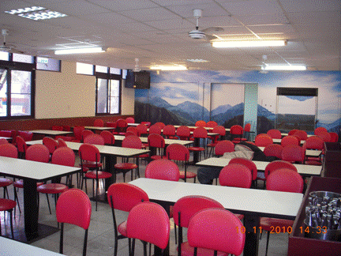
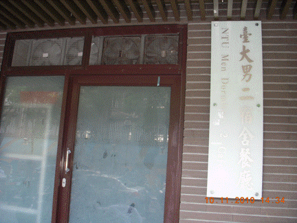
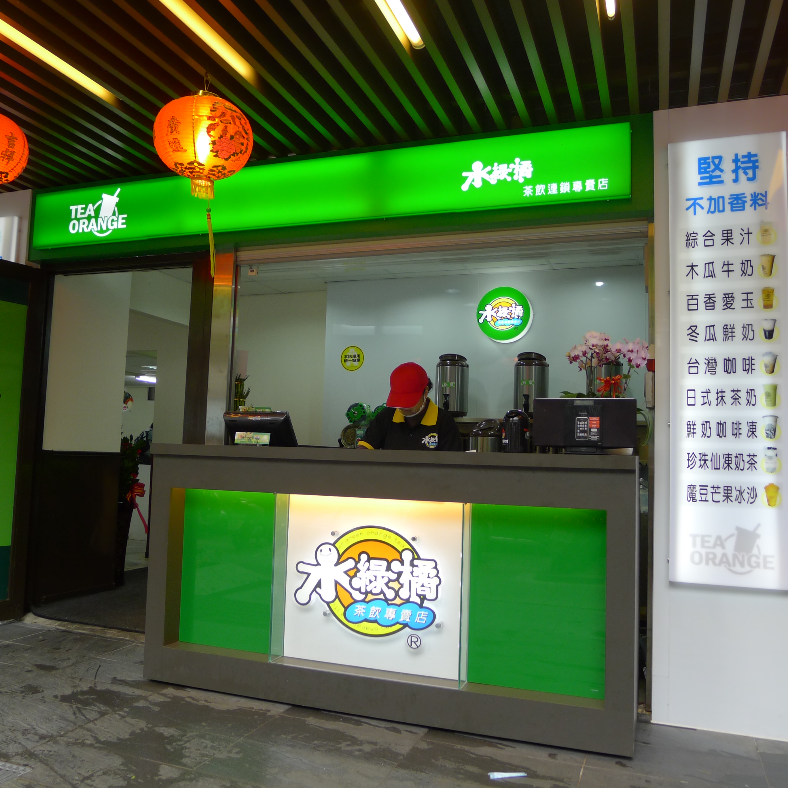
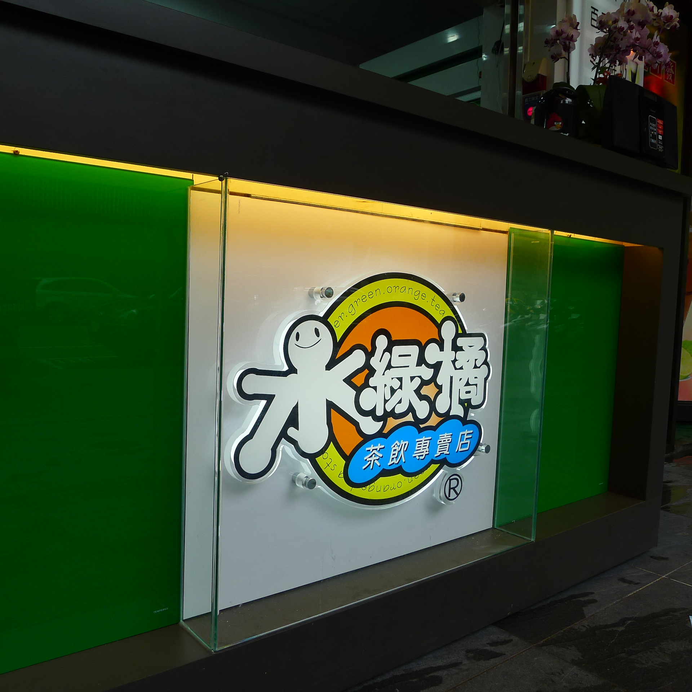

男二宿舍餐廳(水綠橘)
- 本校營業地點位置 男生第二宿舍(台北市徐州路2~3號1樓)
- 餐飲業者名稱 男二宿舍餐廳(水綠橘)
- 公司名稱 欣聖食品有限公司
- 營業時間及休息日
每日
早餐06:00 am ~ 09:00 am
午餐10:30 am ~ 02:00 pm
晚餐04:00 pm ~ 08:00 pm
每個1、3星期日休 - 聯絡電話 (02)2396-6871, 課員(02)2396-6770
- 營業項目、型態 中式自助餐、餐會、便當
- 業者簡介
單價100公克12元、白飯免費、稀飯、以自助方式供餐、每餐皆可提供90~100樣菜色 "蒸、煮、炒、炸、涼拌、甜點、水果....等"
餐廳業者參考照片
- 
- 
- 
- 